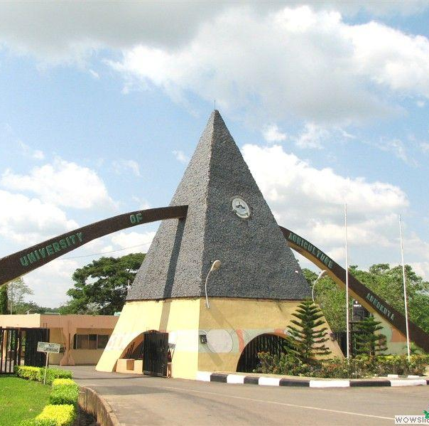

Road Degradation & Seasonal Erosion
Severe terrain damage stops heavy municipal compactor trucks before they can reach the student compounds at the campus edge.

.png)
Klinam builds resilient micro-utility routes for off-campus student clusters, converting broken streets and unmapped compounds into a predictable collection network.
At Klinam our goal is to build a modern, decentralized waste system that completely cleans up the environment, starting from our vicinity. We want to clear every roadside dump heap, provide the proper system to enable people to carry out proper waste management practices. We plan to carry out an alphanumeric address number (like ACC-04) system, and launch a mobile web application that lets users tell us exactly when their trash bins are full. We are changing how our people disposes of waste, protecting public health, and recycling materials right at the source.
Severe terrain damage stops heavy municipal compactor trucks before they can reach the student compounds at the campus edge.
When people don't have the proper infrastructure to take care of waste properly

A total lack of structured house numbering paralyzes logistical tracking and leads to repeated missed collection stops.


Uncollected waste fuels malaria and typhoid outbreaks across student lodges and shared campus edges.

Informal dumping cuases blocked drainage that in turn creates a dangerous flood risks during heavy rains.

Visible refuse piles degrade neighborhood appeal and distort landlord rent pricing models.
We use agile cargo tricycles (Kekes) and custom manual carts that easily fit into narrow, muddy off-campus streets where large municipal trucks cannot physically move.

We assign a unique alphanumeric code and fix a clean, high-visibility number plate directly onto your lodge gate (like ACC-04). This gives the house a proper address for deliveries and logistics.

Lodge caretakers get access to a dead-simple web dashboard. When the compound trash bins hit a 70% full capacity, they tap a single button to request an instant pickup.

For absolute simplicity, we integrate OPay's lightweight API to handle both the initial activation deposit and recurring monthly maintenance fees. This keeps transactions fast, trusted, and familiar for landlords and caretakers.

All waste goes straight to our transit hub on campus. We separate plastics to sell to industrial recyclers and send organic food waste to biogas energy partners. We enforce a zero open-burning, zero-odor rule.

We do more than just haul trash we educate. Our dedicated team regularly runs grassroots campaigns to sensitize residents on the absolute dos and don'ts of local waste management, shifting the culture at the source.

FUNAAB acts as our pilot testing ground for Klinam. We start with a volunteer-driven cleanup and prototype the solution on ground before scaling fleet assets across the remaining axes.

Secure funding to carryout necessary procedures and get needed equipments.
Secure a parcel of land to serve as our temporary waste holding site.
Volunteer cleanup and campaign off-campus and bordering student compounds.
Speak to the Caretaker Association, and discuss about them coming onboard our system.
Install apartment tags one street at a time to validate the address mapping layer.
Scale the solution street by street, as we grow and get better.